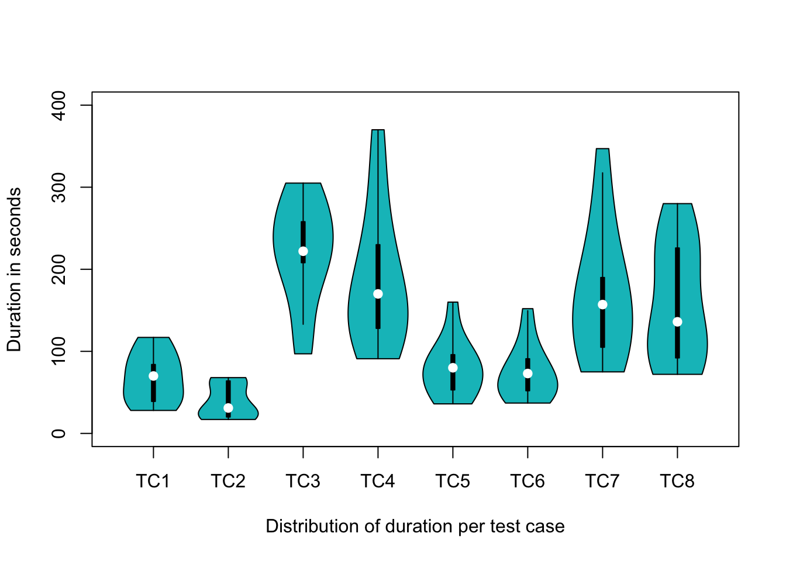

suppressPackageStartupMessages(library(caret))
suppressPackageStartupMessages(library(dplyr))
suppressPackageStartupMessages(library(vioplot))
suppressPackageStartupMessages(library(tidyverse))Augmented Testing Study
Introduction
This document contains a descriptive analysis of the effect of Augmented Testing on the relative duration of GUI-based testing. We are mainly visualizing the data as bar and violin plots.
Load libraries
Config
color_main <- "#02BFC4"
color_alt <- "#F7766D"Import data
df_raw <- read.csv(file = "../data/results.csv", header = TRUE, sep = ",")
tc_names <- c("TC1", "TC2", "TC3", "TC4", "TC5", "TC6", "TC7", "TC8")
df <- df_raw %>% mutate(
TC_sum = TC1_seconds + TC2_seconds + TC3_seconds + TC4_seconds + TC5_seconds +
TC6_seconds + TC7_seconds + TC8_seconds,
Online_session = as.logical(Online_session))Seperate two treatments
df_pivot <- df_raw %>%
pivot_longer(
cols = c(matches("TC._treatment"), matches("TC._seconds$")),
names_to = c("tc", ".value"), names_pattern = "TC(.)_(.*)"
) %>%
select("ID", "tc", "treatment", "seconds")
df_only_m <- df_pivot %>%
filter(treatment == "M") %>%
pivot_wider(names_from = tc, values_from = seconds, names_prefix = "TC") %>%
select(starts_with("TC")) %>%
select(order(colnames(.)))
df_only_a <- df_pivot %>%
filter(treatment == "A") %>%
pivot_wider(names_from = tc, values_from = seconds, names_prefix = "TC") %>%
select(starts_with("TC")) %>%
select(order(colnames(.)))Plot total test execution time per subject
time_sum_bar <- barplot(height = df$TC_sum, names = df$ID,
col = color_main,
horiz = TRUE, las = 1,
xlim = c(0, 1600),
xlab = "Sum of test case duration per participant in seconds",
ylab = "Paticipant ID"
)
text(time_sum_bar,
x = df$TC_sum - 80, paste(df$TC_sum, "sec", sep = " "),
cex = 0.8)rec_time_sum_bar <- recordPlot()Violin plot per test case
data <- df %>% select(ends_with("_seconds"))
vioplot(data,
col = color_main,
names = tc_names,
ylim = c(0, 400),
ylab = "Duration in seconds",
xlab = "Distribution of duration per test case"
)
rec_time_per_tc <- recordPlot()Violin plot per test case with seperation of the treatments
vioplot(df_only_m,
side = "left",
col = color_alt,
ylim = c(0, 400),
horiz = TRUE, las = 1,
xlab = "Distribution of duration per test case and treatment",
ylab = "Duration in seconds"
)
vioplot(df_only_a,
side = "right",
col = color_main,
ylim = c(0, 400),
horiz = TRUE, las = 1,
add = TRUE
)
legend("topleft", fill = c(color_alt, color_main),
legend = c("manual", "AT"), title = "Treatment")
rec_time_per_tc_split <- recordPlot()Mean values per treatment
df_mean_tc <- df_raw %>%
pivot_longer(
cols = c(matches("TC._treatment"), matches("TC._seconds$")),
names_to = c("tc", ".value"), names_pattern = "TC(.)_(.*)"
) %>%
select("ID", "tc", "treatment", "seconds")
df_mean_tc <- df_mean_tc %>%
group_by(tc, treatment) %>%
summarise(mean_seconds = as.integer(round(mean(seconds), 0)), .groups = "drop")
df_mean_tc <- df_mean_tc %>%
pivot_wider(names_from = treatment, values_from = mean_seconds) %>%
mutate(diff_percent = as.integer(round(100 / M * (A - M), 0))) %>%
select(tc, M, A, diff_percent)
head(df_mean_tc, 8)# A tibble: 8 × 4
tc M A diff_percent
<chr> <int> <int> <int>
1 1 64 73 14
2 2 36 41 14
3 3 256 180 -30
4 4 246 136 -45
5 5 101 54 -47
6 6 101 51 -50
7 7 196 139 -29
8 8 222 105 -53Sum of mean values per treatment
total_a <- as.integer(sum(df_mean_tc$A))
total_m <- as.integer(sum(df_mean_tc$M))
total_diff_percent <- as.integer(round(100 / total_m * (total_a - total_m), 0))
sprintf("Total: %i (M) and %i (A) = %i percent",
total_m, total_a, total_diff_percent)[1] "Total: 1222 (M) and 779 (A) = -36 percent"LaTeX table export
suppressPackageStartupMessages(library(xtable))
df_table <- df_mean_tc %>%
add_row(tc = "Total", A = total_a, M = total_m, diff_percent = total_diff_percent)
print(xtable(df_table, type = "latex"), include.rownames = FALSE)% latex table generated in R 4.3.1 by xtable 1.8-4 package
% Wed Sep 20 11:14:30 2023
\begin{table}[ht]
\centering
\begin{tabular}{lrrr}
\hline
tc & M & A & diff\_percent \\
\hline
1 & 64 & 73 & 14 \\
2 & 36 & 41 & 14 \\
3 & 256 & 180 & -30 \\
4 & 246 & 136 & -45 \\
5 & 101 & 54 & -47 \\
6 & 101 & 51 & -50 \\
7 & 196 & 139 & -29 \\
8 & 222 & 105 & -53 \\
Total & 1222 & 779 & -36 \\
\hline
\end{tabular}
\end{table}Export recorded plots as TikZ files
To create standalone tex files, you can add the standAlone parameter.
tikz('standAloneExample.tex', standAlone=TRUE)
suppressPackageStartupMessages(library(tikzDevice))Test execution timer per participant
tikz("figures/time_per_subject.tex", width = 6, height = 4)
par(mar = c(2, 4, 1, 1)) # Set the margin
rec_time_sum_bar
dev.offViolin plot of time distribution per test case
tikz("figures/time_per_tc.tex", width = 6.5, height = 4)
par(mar = c(2, 4, 1, 1)) # Set the margin
rec_time_per_tc
dev.offViolin plot of time distribution per test case (both treatments)
tikz("figures/time_per_tc_split.tex", width = 6.5, height = 4)
par(mar = c(2, 4, 1, 1)) # Set the margin
rec_time_per_tc_split
dev.off